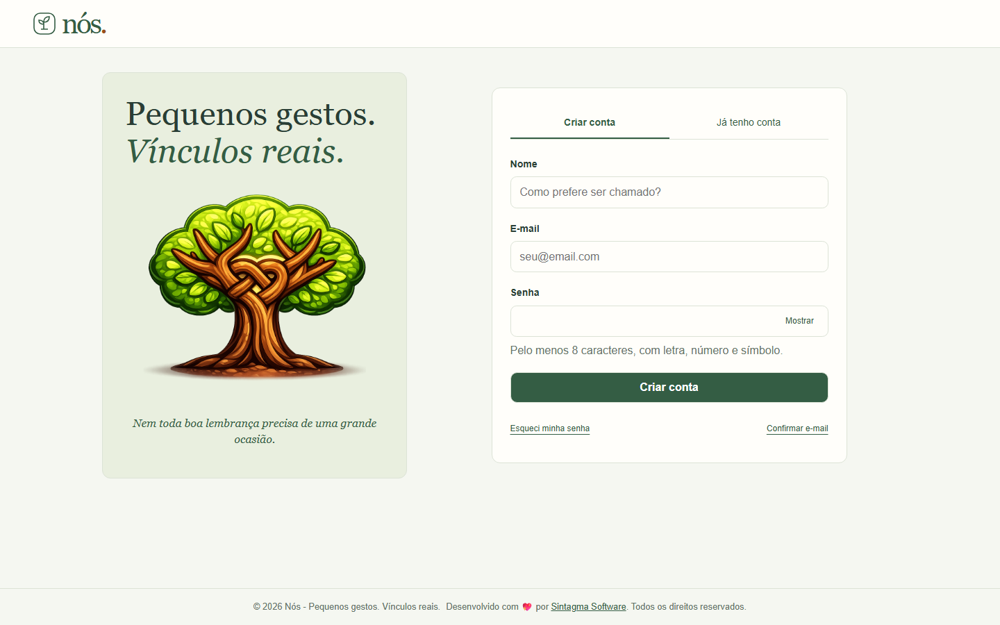
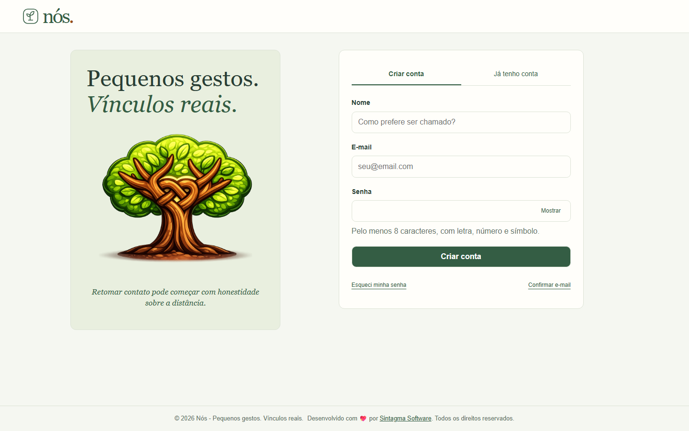
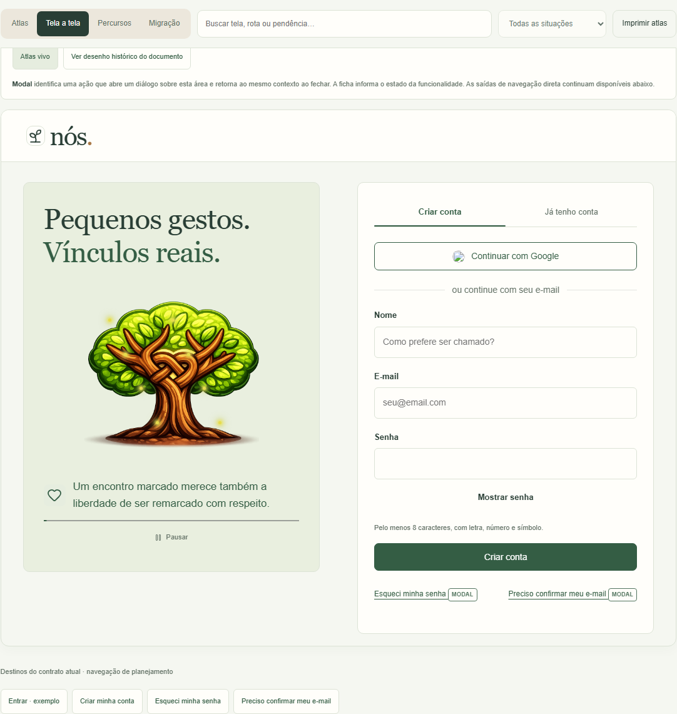
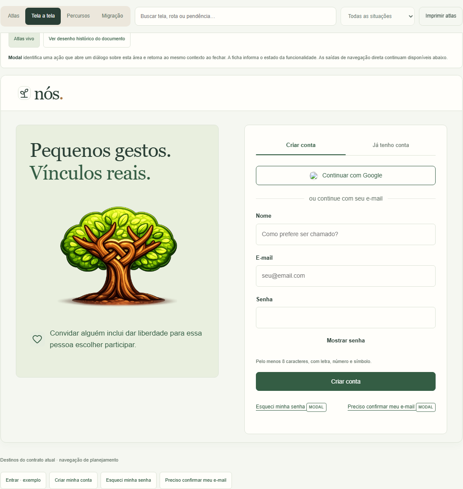
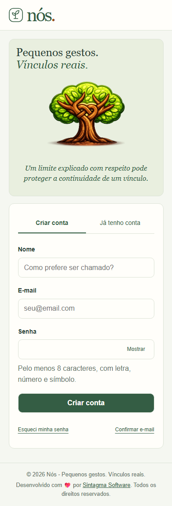
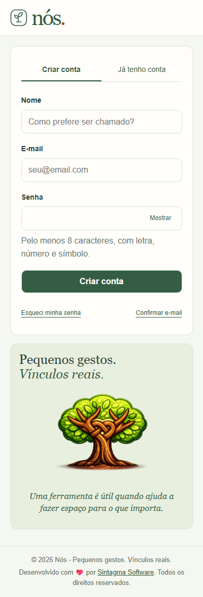
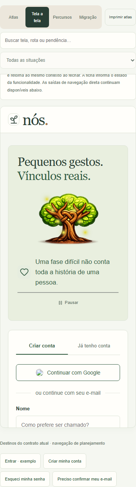
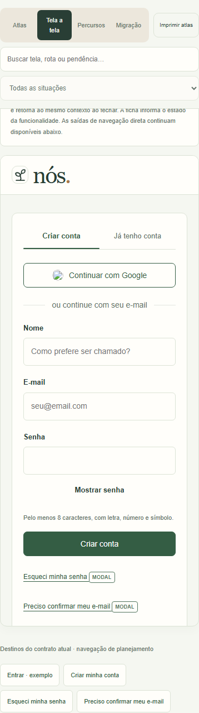

v4.0.0-alpha.23 · 23/11/2026 · Edge local, larguras de janela de 1440 e 390 pixels.
O formulário passa para o topo. As imagens mostram o modo Criar conta com movimento reduzido. As duas modalidades compartilham o posicionamento. Voo ascendente, troca de frases, pausa e três cores foram conferidos em execução.
Angular local · Next.js local de referência · Atlas vivo







